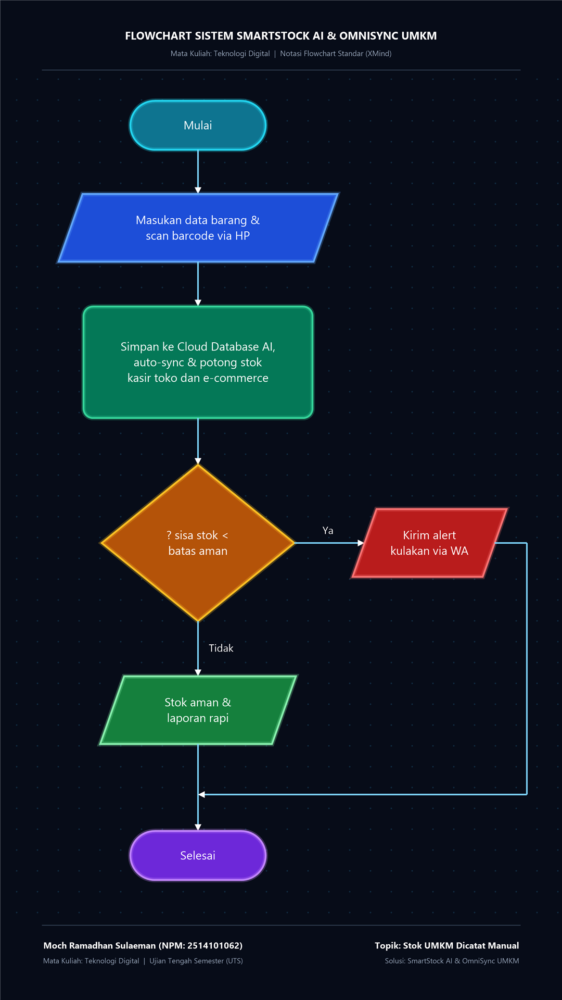

Permasalahan Spesifik:
Pencatatan inventaris dan stok barang pada Usaha Mikro, Kecil, dan Menengah (UMKM) yang masih mengandalkan cara manual konvensional (buku tulis kertas, buku kas, lembaran nota tercecer, atau spreadsheet tanpa integrasi real-time). Hal ini menyebabkan ketidakakuratan data stok fisik vs catatan (stock discrepancy), keterputusan sinkronisasi antara toko fisik dan toko online marketplace, serta pemborosan waktu kerja.
Pengguna dan Pihak yang Terdampak:
Proses Konvensional Saat Ini:
Akar Penyebab Masalah:
| Pihak Terdampak | Dampak Nyata |
|---|---|
| Pemilik UMKM | Modal mengendap pada dead stock hingga puluhan juta rupiah, penalti toko dari marketplace akibat sering membatalkan pesanan, dan kebocoran laba bersih hingga 20%. |
| Konsumen | Rasa kecewa mendalam akibat pesanan mendadak dibatalkan, waktu terbuang menunggu refund, dan hilangnya loyalitas pada UMKM lokal. |
| Karyawan Toko | Lembur berjam-jam untuk penghitungan fisik manual dan tekanan stres akibat tuduhan selisih barang hilang. |
Solusi yang dirancang adalah SmartStock AI & OmniSync UMKM™, aplikasi seluler cerdas berbasis AI dan kamera ponsel:

📊 Gambar 5.1: Flowchart Sistem — SmartStock AI & OmniSync UMKM (Resolusi Tinggi 1080x1920 Vertikal)
| Parameter | Sebelum Penerapan (Pencatatan Manual) | Sesudah Penerapan (SmartStock AI) |
|---|---|---|
| Metode Pencatatan | Buku tulis kertas lusuh, nota bon tercecer, spreadsheet terpisah. | Database cloud terpusat, aman dan dapat diakses dari smartphone 24/7. |
| Kecepatan Input Stok | Butuh 1–2 jam menyalin faktur supplier ke buku catatan. | Cukup 10 detik via foto kamera HP berbasis AI OCR. |
| Sinkronisasi Offline & Online | Terputus total; stok di marketplace harus diubah manual satu per satu. | Terhubung otomatis real-time 2 arah ke semua marketplace secara instan. |
| Kasus Overselling / Pembatalan | Sering terjadi (10%–20% pesanan dibatalkan karena stok fisik habis). | 0% (Nol Kasus), toko terbebas dari penalti marketplace dan rating bintang 5. |
| Waktu Stock Opname | 3–5 jam tiap akhir pekan, toko terpaksa tutup lebih awal. | Otomatis terakumulasi setiap detik, hemat waktu hingga 80%. |
Spesifikasi Video: Format Vertikal 9:16 (1080 × 1920 px) | Durasi Total: 120 Detik | Tokoh: Pak Joko (Pemilik Toko UMKM)
| Adegan & Durasi | Visual & Elemen 9:16 | Aksi Animasi | Narasi / Voice Over (VO) | Teks Layar | SFX & BGM |
|---|---|---|---|---|---|
| 1. Masalah (00:00 – 00:15) |
Pak Joko duduk lesu di meja toko, pusing di depan tumpukan buku tulis stok lusuh penuh coretan tinta dan nota berhamburan. Rak toko tampak berantakan. | Buku tulis jatuh menumpuk di meja dengan debu kartun. Nota berterbangan ditiup angin. Tanda tanya berputar di atas kepala Pak Joko. | "Stok barang UMKM masih dicatat di buku tulis dan nota kertas? Awas, rawan hilang, selisih hitung, dan bikin pusing pemilik toko!" | STOK DICATAT MANUAL? Buku Rusak & Nota Hilang! |
BGM: Musik komedi cemas. SFX: Tumpukan buku menghantam meja, kertas robek, helaan napas. |
| 2. Dampak (00:15 – 00:30) |
Split screen vertikal: Atas layar HP pembeli muncul notifikasi merah "Pesanan Dibatalkan - Stok Habis". Bawah: Pak Joko stres di depan laci kasir kosong & barang gudang kedaluwarsa. | Notifikasi merah bergetar di layar. Rating bintang 5 pecah berjatuhan menjadi bintang 1. Koin uang melayang keluar dari laci kasir. | "Akibatnya fatal! Pesanan online masuk tapi stok fisik toko ternyata habis. Kena penalti bintang satu, pembeli kecewa, dan rugi jutaan rupiah!" | Pesanan Dibatalkan! Overselling & Rating Anjlok Rugi Modal Mati! |
SFX: Notifikasi error keras (buzz), kaca pecah, koin tumpah. BGM: Nada tegang melambat. |
| 3. Solusi Digital (00:30 – 00:50) |
Layar berganti cerah. Muncul mockup smartphone modern menampilkan logo SmartStock AI & OmniSync UMKM™ dengan ikon awan hijau menyambungkan kasir ke Shopee, Tokopedia, dan TikTok Shop. | Smartphone meluncur naik dengan bounce halus. Ikon awan cloud memancarkan garis cahaya ke logo marketplace. Pak Joko tersenyum ceria. | "Solusinya: SmartStock AI! Aplikasi manajemen stok pintar yang otomatis menghubungkan kasir toko fisik dan seluruh online shop kamu dalam satu genggaman." | SOLUSI CERDAS UMKM: SmartStock AI & OmniSync Kelola Stok 100% Otomatis! |
BGM: Upbeat Tech Acoustic ceria dan energetik. SFX: Sparkle chime, digital whoosh. |
| 4. Alur Sistem (00:50 – 01:15) |
3 kotak tahapan vertikal dinamis: 1. Foto nota / scan barcode pakai kamera HP. 2. Cloud auto-sync kurangi stok di kasir & Shopee serentak. 3. Notifikasi WhatsApp masuk: "Waktunya Kulakan!". |
Sinar laser hijau menyapu barcode di layar. Ikon angka stok di marketplace berkurang seketika saat kasir scan. Balon chat WhatsApp meluncur masuk dengan centang hijau. | "Tiga langkah mudah: Scan barcode pakai kamera HP, stok otomatis tersinkron ke semua marketplace, dan dapatkan notifikasi WhatsApp saat stok menipis!" | 1. Scan Barcode via HP 2. Auto-Sync Online & Offline 3. Pengingat Kulakan di WA |
SFX: Beep barcode scanner, denting sinkronisasi sukses, pop pesan WA masuk. |
| 5. Manfaat (01:15 – 01:40) |
Toko Pak Joko tertata rapi dengan barcode QR. Pak Joko melayani pembeli dengan senyum lebar memakai HP. Grafik batang penjualan hijau melonjak tinggi. | Tirai pembersih menyapu layar. Grafik omzet melesat naik. Angka statistik: "Hemat Waktu 80%" dan "Nol Pembatalan" muncul. Hujan konfeti emas memenuhi layar. | "Hasilnya nyata! Hemat waktu pembukuan hingga 80%, nol pembatalan pesanan, dan pelanggan puas repeat order dengan rating bintang lima!" | Nol Pembatalan Stok! Hemat Waktu 80% Banjir Bintang ⭐⭐⭐⭐⭐ |
SFX: Kasir ka-ching struk, tepuk tangan mini, kembang api pop pop. BGM: Puncak nada ceria. |
| 6. Kesimpulan (01:40 – 02:00) |
Pak Joko bersama para pelaku UMKM Indonesia tersenyum bangga memegang HP mereka. Di tengah layar muncul lencana digital emas dan kartu identitas mahasiswa. | Zoom ke perisai emas. Teks slogan muncul kinetik. Fade-out elegan menutup video pada detik ke-120. | "Kelola stok gak perlu ribet. Bersama SmartStock AI, UMKM naik kelas, kelola stok cepat dan pas! Saya Moch Ramadhan Sulaeman, terima kasih." | UMKM Naik Kelas, Kelola Stok Cepat & Pas! Moch Ramadhan Sulaeman NPM: 2514101062 |
BGM: Fade-out musik penutup. SFX: Soft glass chime penutup. |